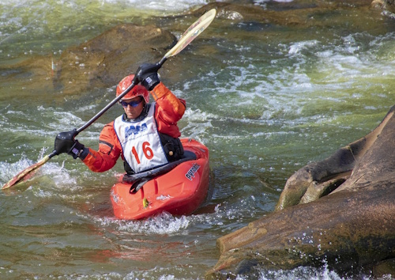

Born from Competition. Driven by Adventure.

Deschutes River Rafting
History
Deschutes River Rafting Company started as a dream. The founder, Pete Mitchell's inspiration began when he was a young man, playing and competing in all the water sports that Central Oregon had to offer. His stories and experience as a Pole Pedal Paddle athlete is the foundation of a rafting company that blends his passion for water sports and his love of nature.
Today, our team offers guided river adventures that emphasize safety and fun. We are here to help you have unforgettable experiences of Central Oregon's rivers with families and friends.
Adventure Awaits You!